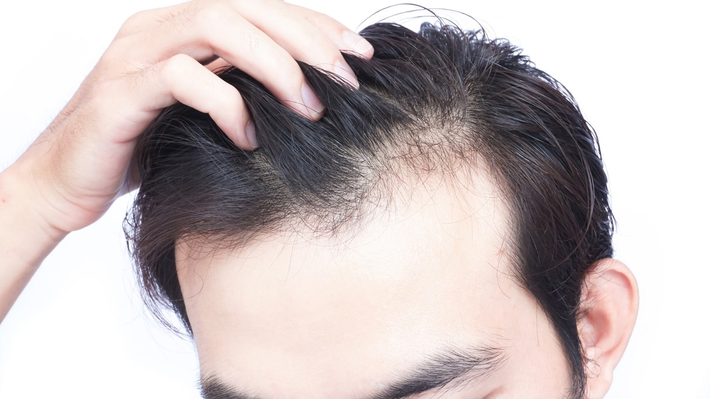

Going bald too young?
It’s normal to lose about 100 strands of hair from your head a day. But losing more could mean that your hair is beginning to thin, and it's time to consult a dermatologist.
Typically, we think of balding as a condition that plagues older men, but there are many types and causes of hair loss that can happen to anyone, regardless of your age or gender, anytime.
Is there a difference between the hair loss people experience as they get older and premature hair loss?
When we think of hair loss, we usually think of hormonal hair loss, or male and female pattern baldness. This is most common for women around menopause, but can occur for men as early as their 20s.
However, other causes of hair loss are more common in younger people. The type of hair loss someone has determines what area of the scalp is affected – if the hair is coming out at the root or breaking in the middle and if the hair loss is reversible. A board certified dermatologist can diagnose the type of hair loss with an exam, and a biopsy of the scalp can be performed for clarification.
There are many reasons why a young person may be experiencing hair loss:
- Excessive use of styling products, such as perms, dyes, gels and relaxers
- Eating disorders, such as anorexia or bulimia
- Restrictive diets that don’t provide enough protein or iron
- Childbirth
- Major Surgery
- High fever
- Infection
- Telogen effluvium, or sudden stress-related hair loss
- Autoimmune conditions, such as Lupus
- Thyroid disorders
- Trichotillomania, a hair-pulling disorder
Birth control pills also can occasionally result in hair thinning if a woman already has a genetic disposition to hormonal hair loss.
If baldness runs in my family, will I lose my hair, too?
Having a family history of male or female pattern hair loss increases your risk of this type of hormonal hair loss. If you notice your hair thinning, visiting a dermatologist early to begin treatment is the best way to preserve hair and regrow what’s been lost.
Is there a way to slow or prevent baldness once you notice hair loss?
Whether or not hair loss can be stopped depends on the diagnosis. In certain conditions, such as hormonal or familial hair loss, treatments can be expected to halt progression of the shedding or regrow some – but not usually all – of the lost hair.
When hair loss is due to an underlying medical condition, such as a thyroid disease, iron deficiency or anemia, the hair will regrow when the condition is treated.
In cases like telogen effluvium, a sudden type of hair loss that happens typically three months after a stressful event or illness, the hair loss is completely reversible without any treatment.
Unfortunately, there are some types of hair loss in which the follicle becomes scarred or closes off, and hair can no longer regrow in those areas. In these cases, the goal of treatment is to prevent further scarring and preserve the hair that is left.
Is it safe to wear hats, blow dry or wash your hair every day if you notice your hair thinning?
In most types of hair loss, routine practices, such as daily washing, blow drying and wearing hats, should not worsen the loss. In some cases, particularly cicatricial alopecia, in which African American women experience scarring hair loss on the top of the scalp, you should limit the use of harsh styling products, chemical relaxers, weaves, heat and tight braids or styles.
What can I do to help with my hair loss?
An over-the-counter biotin supplement can help some patients with hair growth. Doses of 3-5 mg daily are recommended. Taking a daily multivitamin will also ensure that our body has all the nutrients it needs to grow hair.
You could also try minoxidil, an over-the-counter product typically recommended by dermatologists for hair loss. This can decrease shedding and increase the rate at which hair regrows. Using a medicated antidandruff shampoo will also ensure that there is a healthy environment on the scalp to regrow hair.
The most important thing is to see a dermatologist as soon as you notice that you’re shedding more hair than usual or first notice thinning. Beginning treatment as early as possible is crucial, but many people wait until their hair loss is very advanced to seek treatment and, at that point, it becomes much more difficult to treat.